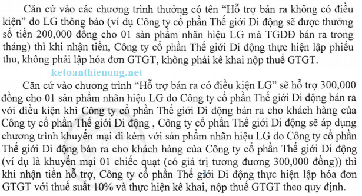
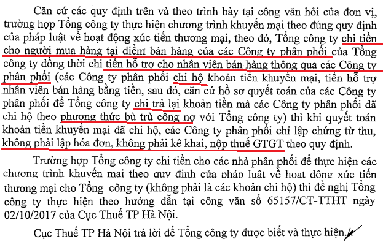
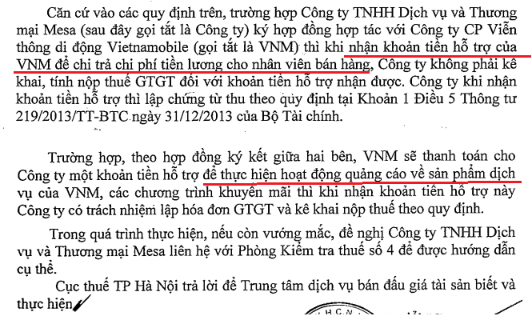
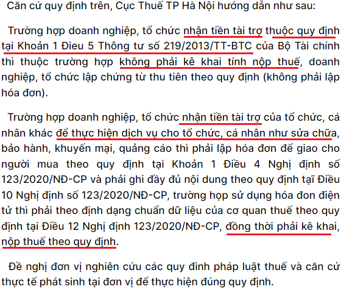
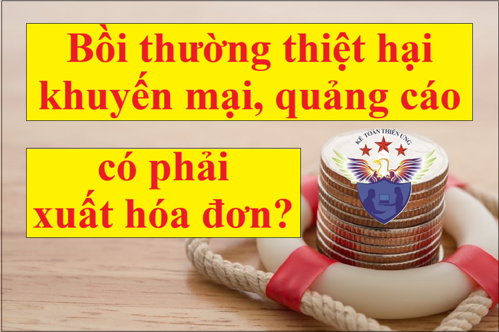

Nhận tiền bồi thường, tiền hỗ trợ, tiền thưởng, tiền khuyến mãi, quảng cáo có phải xuất hóa đơn? Bồi thường bằng hàng hóa, dịch vụ có phải lập hóa đơn, kê khai thuế? Kế toán Diệu Tâm sẽ giải đáp các vướng mắc trên của các bạn.
Từ ngày 01/7/2025 sẽ căn cứ áp dụng theo quy định tại Nghị định 181/2025/NĐ-CP
Điều 6. Giá tính thuế đối với hàng hóa, dịch vụ dùng để trao đổi, tiêu dùng nội bộ, biếu, tặng, cho và hàng hóa, dịch vụ dùng để khuyến mại
Đối với hàng hóa, dịch vụ dùng để khuyến mại theo quy định của pháp luật về thương mại, giá tính thuế được xác định bằng không (0), trừ trường hợp bán hàng, cung cấp dịch vụ với giá thấp hơn giá bán hàng, cung cấp dịch vụ trước đó, được áp dụng trong thời gian khuyến mại (khuyến mại bằng hình thức giảm giá) thì giá tính thuế là giá bán đã giảm áp dụng trong thời gian khuyến mại đã đăng ký hoặc thông báo theo quy định của pháp luật thương mại về hoạt động xúc tiến thương mại. Các hình thức khuyến mại của hàng hóa, dịch vụ khuyến mại có giá tính thuế bằng không (0) hoặc giá tính thuế của hàng hóa, dịch vụ bán ra không bao gồm giá trị của hàng hóa, dịch vụ dùng để khuyến mại, cụ thể như sau:
a) Đưa hàng mẫu, cung cấp dịch vụ mẫu để khách hàng dùng thử không phải trả tiền thì hàng mẫu, dịch vụ mẫu có giá tính thuế bằng không (0).
b) Tặng hàng hóa, cung cấp dịch vụ không thu tiền thì hàng hóa, dịch vụ tặng có giá tính thuế bằng không (0).
c) Bán hàng hóa, cung cấp dịch vụ có kèm theo phiếu mua hàng hóa, phiếu sử dụng dịch vụ thì giá tính thuế của hàng hóa, dịch vụ không bao gồm giá trị phiếu mua hàng hóa, phiếu sử dụng dịch vụ.
d) Bán hàng hóa, cung cấp dịch vụ có kèm theo phiếu dự thi cho khách hàng để chọn người trao thưởng theo thể lệ và giải thưởng đã công bố (hoặc các hình thức tổ chức thi và trao thưởng khác tương đương) thì giá tính thuế của hàng hóa, dịch vụ không bao gồm giá trị của hàng hóa, dịch vụ trúng thưởng theo phiếu dự thi (nếu có).
đ) Bán hàng hóa, cung cấp dịch vụ kèm theo việc tham dự các chương trình mang tính may rủi mà việc tham gia chương trình gắn liền với việc mua hàng hóa, dịch vụ và việc trúng thưởng dựa trên sự may mắn của người tham gia theo thể lệ và giải thưởng đã công bố thì giá tính thuế của hàng hóa, dịch vụ không bao gồm giá trị của hàng hóa, dịch vụ dùng để trao thưởng.
e) Tổ chức chương trình khách hàng thường xuyên, theo đó việc tặng thưởng cho khách hàng căn cứ trên số lượng hoặc trị giá mua hàng hóa, dịch vụ mà khách hàng thực hiện được thể hiện dưới hình thức thẻ khách hàng, phiếu ghi nhận sự mua hàng hóa, dịch vụ hoặc các hình thức khác thì giá tính thuế không bao gồm giá trị của thẻ khách hàng, phiếu ghi nhận sự mua hàng hóa, dịch vụ hoặc các hình thức khác.
Trường hợp bán hàng hóa, cung cấp dịch vụ quy định tại khoản này nhưng không thực hiện theo quy định về khuyến mại của pháp luật về thương mại thì giá tính thuế thực hiện như hàng hóa biếu, tặng, cho quy định tại khoản 1 Điều này.
Trước ngày 01/7/2025 thì căn cứ theo khoản 1 điều 5 Thông tư 219/2013/TT-BTC quy định các trường hợp không phải kê khai, tính nộp thuế GTGT cụ thể như sau:
1. Tổ chức, cá nhân nhận các khoản thu về bồi thường bằng tiền (bao gồm cả tiền bồi thường về đất và tài sản trên đất khi bị thu hồi đất theo quyết định của cơ quan Nhà nước có thẩm quyền), tiền thưởng, tiền hỗ trợ, tiền chuyển nhượng quyền phát thải và các khoản thu tài chính khác.
- Cơ sở kinh doanh khi nhận khoản tiền thu về bồi thường, tiền thưởng, tiền hỗ trợ nhận được, tiền chuyển nhượng quyền phát thải và các khoản thu tài chính khác thì lập chứng từ thu theo quy định. Đối với cơ sở kinh doanh chi tiền, căn cứ mục đích chi để lập chứng từ chi tiền.
- Trường hợp bồi thường bằng hàng hóa, dịch vụ, cơ sở bồi thường phải lập hóa đơn và kê khai, tính, nộp thuế GTGT như đối với bán hàng hóa, dịch vụ; cơ sở nhận bồi thường kê khai, khấu trừ theo quy định.
- Trường hợp cơ sở kinh doanh nhận tiền của tổ chức, cá nhân để thực hiện dịch vụ cho tổ chức, cá nhân như sửa chữa, bảo hành, khuyến mại, quảng cáo thì phải kê khai, nộp thuế theo quy định.
Ví dụ: Doanh nghiệp A nhận được khoản bồi thường thiệt hại do bị hủy hợp đồng từ doanh nghiệp B là 50 triệu đồng thì doanh nghiệp A lập chứng từ thu và không phải kê khai, nộp thuế GTGT đối với khoản tiền trên.
Ví dụ: Công ty cổ phần Sữa ABC có chi tiền cho các nhà phân phối (là tổ chức, cá nhân kinh doanh) để thực hiện chương trình khuyến mại (theo quy định của pháp luật về hoạt động xúc tiến thương mại), tiếp thị, trưng bày sản phẩm cho Công ty (nhà phân phối nhận tiền này để thực hiện dịch vụ cho Công ty) thì khi nhận tiền, trường hợp nhà phân phối là người nộp thuế GTGT theo phương pháp khấu trừ lập hóa đơn GTGT và tính thuế GTGT theo thuế suất 10%, trường hợp nhà phân phối là người nộp thuế GTGT theo phương pháp trực tiếp thì sử dụng hóa đơn bán hàng và xác định số thuế phải nộp theo tỷ lệ (%) trên doanh thu theo quy định.
Chi tiết các bạn có thể xem thêm theo các Công văn sau:
Theo Công văn 4723/TCT-CS ngày 13/10/2017 của Tổng cục Thuế:

Theo Công văn 65157/CT-TTHT ngày 2/10/2017 của Cục thuế TP. HN:
|
- Trường hợp Tổng công ty chi tiền cho các khách hàng thương mại (các nhà phân phối) để thực hiện các chương trình khuyến mại (theo quy định của pháp luật về hoạt động xúc tiến thương mại) cho Tổng công ty (nhà phân phối nhận tiền này để thực hiện dịch vụ cho Tổng công ty) thì khi nhận tiền, nhà phân phối phải lập hóa đơn theo quy định (trường hợp nhà phân phối là người nộp thuế GTGT theo phương pháp khấu trừ lập hóa đơn GTGT và tính thuế GTGT theo thuế suất 10% trường hợp nhà phân phối là người nộp thuế GTGT theo phương pháp trực tiếp thì sử dụng hóa đơn bán hàng và xác định số thuế phải nộp theo tỷ lệ (%) trên doanh thu theo quy định.) - Trường hợp Tổng công ty chi tiền khuyến mại cho các nhà phân phối (các nhà phân phối không thuộc trường hợp nhận tiền để thực hiện chương trình khuyến mại cho Tổng công ty) và chương trình khuyến mại này theo đúng quy định của pháp luật về hoạt động xúc tiến thương mại thì khi chi tiền, căn cứ vào mục đích chi Tổng công ty lập chứng từ chi tiền theo quy định. - Các khoản chi khuyến mại theo đúng quy định của pháp luật về hoạt động xúc tiến thương mại nếu có đầy đủ hóa đơn, chứng từ hợp pháp theo quy định và đáp ứng các điều kiện quy định tại Điều 4 Thông tư 96/2015/TT-BTC nêu trên thì được hạch toán vào chi phí được trừ khi xác định thu nhập chịu thuế thu nhập doanh nghiệp. - Đối với các hồ sơ, thủ tục để thực hiện chương trình khuyến mại: Đề nghị Tổng công ty liên hệ với Sở công thương nơi tổ chức khuyến mại hoặc cơ quan nhà nước có thẩm quyền để xác định chương trình khuyến mại của Tổng công ty có phù hợp với quy định của pháp luật về thương mại hay không. Cục Thuế TP Hà Nội trả lời để Tổng công ty được biết và thực hiện./. |
Công văn số 1991/CT-TTHT ngày 15/1/2018 của Cục Thuế TP. Hà Nội

Công văn số 8204/CT-TTHT ngày 24/8/2017 của Cục Thuế TP. HCM
"Theo quy định tại khoản 1 Điều 5 Thông tư 219/2013/TT-BTC , khoản tiền hỗ trợ nếu có kèm điều kiện thì phải xuất hóa đơn và tính thuế GTGT.
- Theo đó, trường hợp Công ty có nhận khoản tiền hỗ trợ kinh doanh từ Nhà cung cấp nhưng đổi lại phải cho Nhà cung cấp để vật dụng, vật phẩm và nhân viên tại địa điểm của Công ty để hướng dẫn cách trang trí và thực hiện các chương trình tại địa điểm kinh doanh của Công ty thì khi nhận tiền hỗ trợ phải xuất hóa đơn, tính thuế GTGT với thuế suất 10% và kê khai nộp thuế TNDN."
1. Theo Công văn 11560/CT-TTHT ngày 25/12/2014 của Cục thuế TP.HCM:
“Trường hợp Công ty (Parkson) theo trình bày ký hợp đồng mua mỹ phẩm từ Công ty Estee Lauder VN (Estee Lauder) để bán lẻ trực tiếp cho khách hàng mua sắm tại Trung tâm thương mại Parkson. Để hỗ trợ việc kinh doanh của hai bên, Parkson ký hợp đồng chi tiền hỗ trợ cho Estee Lauder để Estee Lauder cung cấp nhân viên bán hàng và nhân viên tư vấn cho Parkson thì khi nhận tiền, Estee Lauder phải lập hóa đơn GTGT xuất giao cho Parkson và tính thuế GTGT theo thuế suất 10%.”
2. Theo Công văn 2245/CT-TTHT ngày 16/3/2015 của Cục thuế TP.HCM:
“Trường hợp Công ty theo trình bày ký hợp đồng xử lý bề mặt kết cấu thép với Công ty Cơ Khí và xây dựng Posco E & V Việt Nam (Công ty Posco), khi kết thúc hợp đồng có làm mất một số thanh thép của Công ty Posco, theo thỏa thuận tại hợp đồng Công ty phải bồi thường bằng tiền cho Công ty Posco thì khi nhận khoản tiền bồi thường Công ty Posco lập chứng từ thu không phải lập hóa đơn.”
-> Nếu nhận tiền hỗ trợ không kèm điều kiện thì không lập hóa đơn, chỉ cần lập phiếu thu (chi).
Nhận tiền hỗ trợ chi phí tiền lương cho nhân viên bán hàng có phải xuất hoá đơn:
Theo Công văn số 79331/CT-TTHT ngày 8/12/2017 của Cục Thuế TP. Hà Nội:

Như vậy: Nếu đảm bảo các yêu cầu trên thì bên chi sẽ được ghi nhận vào chi phí được trừ khi tính thuế TNDN, bên nhận sẽ ghi nhận vào doanh thu, thu nhập khác.
Xem thêm: Xử lý tiền phạt vi phạm hợp đồng kinh tế
CHÚ Ý: Đối với khoản tiền tài trợ: 
Theo Công văn số 18553/CTHN-TTHT của Cục thuế Tp. Hà Nội ngày 5/4/2023
Nếu DN chi tiền hỗ trợ cho cá nhân kinh doanh:
Theo công văn 1164/TCT-TNCN ngày 21/3/2016: V/v chính sách thuế đối với khoản chi trả thu nhập cho cá nhân kinh doanh.
"Căn cứ các quy định nêu trên, cá nhân là đại lý bán hàng hóa nếu được Công ty chi trả khoản “hỗ trợ khách hàng đạt doanh số” thì khoản tiền này thuộc diện chịu thuế TNCN 1%.
Công ty chi trả khoản “hỗ trợ khách hàng đạt doanh số” cho cá nhân thực hiện khai thuế, nộp thuế thay cho cá nhận theo tờ khai thuế mẫu số 01/CNKD ban hành kèm theo Thông tư số 92/2015/TT-BTC ngày 15/6/2015 của Bộ Tài chính. Công ty ghi cụm từ “Khai thay” vào phần trước cụm từ “Người nộp thuế hoặc Đại diện hợp pháp của người nộp thuế” đồng thời người khai ký tên, đóng dấu của Công ty. Công ty nộp hồ sơ khai thuế thay cho cá nhân tại Chi cục Thuế nơi Công ty đặt trụ sở. Trên hồ sơ tính thuế, Chứng từ thu thuế vẫn thể hiện người nộp thuế là cá nhân kinh doanh."
--------------------------------------------------------------------------------
Chúc các bạn làm tốt công việc kế toán của mình!
